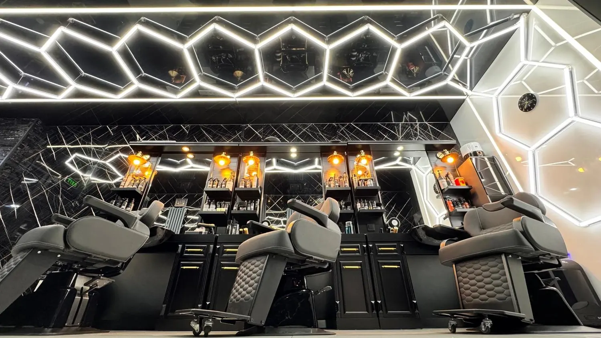
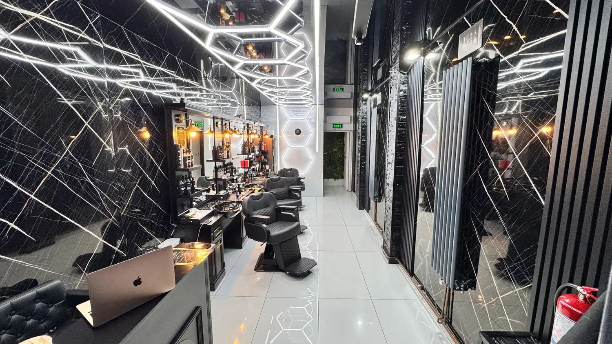
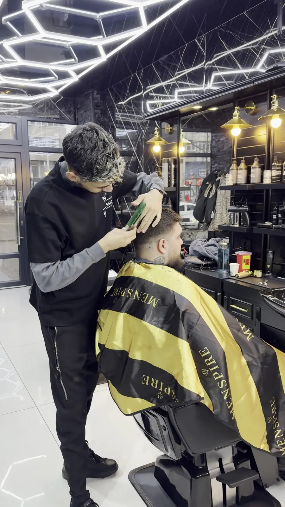
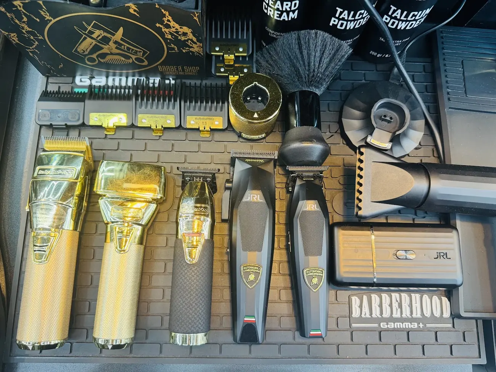
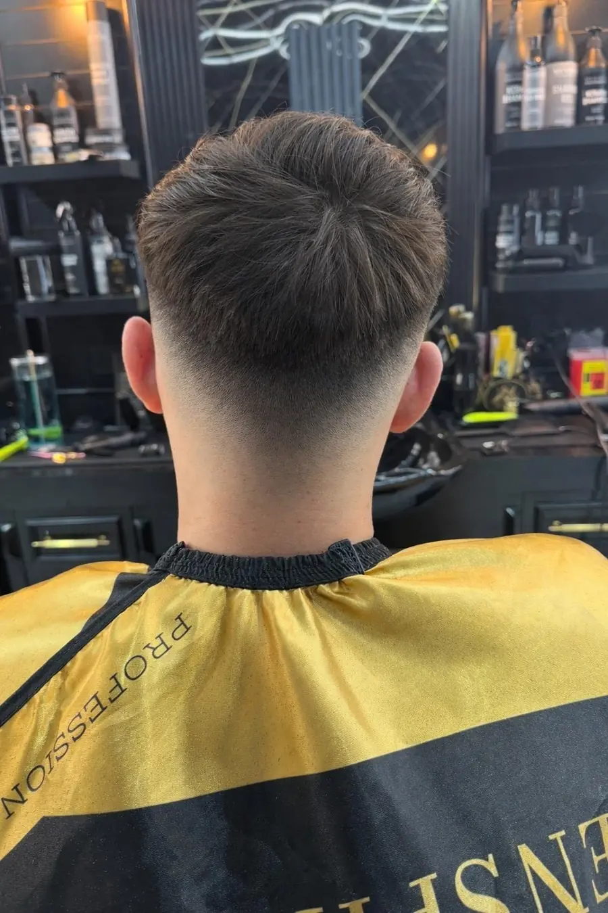
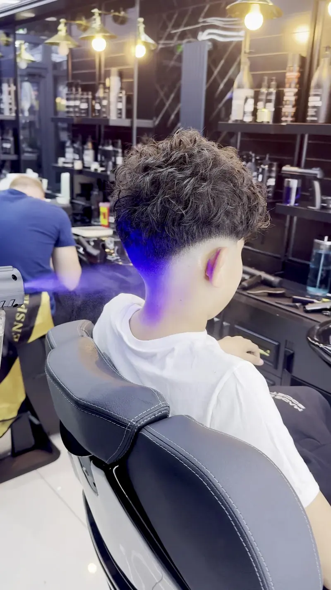
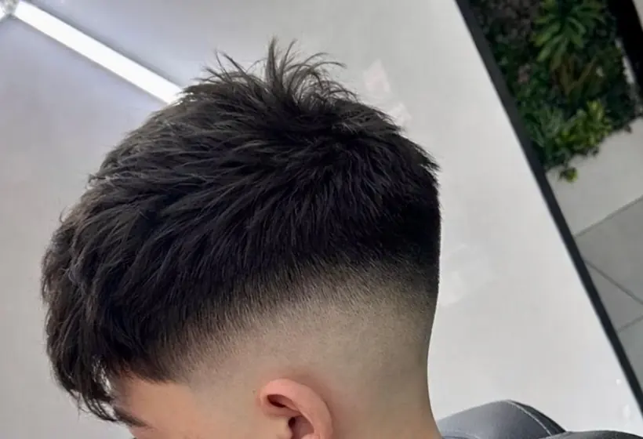

NoirBarbershop · Iași
{{Tuns și fade într-un salon de marmură neagră, sub tuburi de lumină în fagure. Îți alegi ora pe MERO sau ne suni.|Cuts and fades in a black-marble room under honeycomb light tubes. Pick your time on MERO or give us a call.|Cortes e fades numa sala de mármore negro, sob tubos de luz em favo. Escolhes a hora no MERO ou ligas-nos.}}
{{Marmură|Marble|Mármore}}
{{Negru pe pereți, alb pe tavan, alamă la lămpi. Te așezi într-un scaun de piele și restul lumii rămâne în stradă.|Black on the walls, white on the ceiling, brass on the lamps. You sit in a leather chair and the street stays outside.|Preto nas paredes, branco no teto, latão nos candeeiros. Sentas-te numa cadeira de pele e a rua fica lá fora.}}

- {{Pereți|Walls|Paredes}}{{Marmură neagră cu vine albe, de la podea la tavan.|Black marble with white veins, floor to ceiling.|Mármore negro com veios brancos, do chão ao teto.}}
- {{Tavan|Ceiling|Teto}}{{Tuburi de lumină albă, prinse în fagure.|White light tubes set in a honeycomb.|Tubos de luz branca montados em favo.}}
- {{Oglinzi|Mirrors|Espelhos}}{{Lămpi de alamă și rafturi cu produse la fiecare loc.|Brass lamps and product shelves at every station.|Candeeiros de latão e prateleiras com produtos em cada lugar.}}

{{Servicii|Services|Serviços}}
{{Prețul și durata fiecărui serviciu le vezi pe MERO, înainte să alegi ora.|You’ll see the price and length of each service on MERO before you pick a time.|Vês o preço e a duração de cada serviço no MERO antes de escolheres a hora.}}
{{Tuns|Haircut|Corte}}
{{pe MERO|on MERO|no MERO}}{{Mașină și foarfecă, după cum îți stă părul. Spui ce vrei, pleci cum ai vrut.|Clippers and scissors, depending on your hair. Say what you want, leave with it.|Máquina e tesoura, conforme o teu cabelo. Dizes o que queres, sais com isso.}}
Fade
{{pe MERO|on MERO|no MERO}}{{Low, mid sau high — trecere curată la ceafă și la tâmple.|Low, mid or high — a clean blend at the neck and temples.|Low, mid ou high — transição limpa na nuca e nas têmporas.}}
{{Barbă|Beard|Barba}}
{{de confirmat|to be confirmed|a confirmar}}{{Contur și aranjat.|Line-up and trim.|Contorno e aparar.}}
{{Recenzii|Reviews|Opiniões}}
{{Clienții pomenesc mereu aceleași trei lucruri: atmosfera — plăcută și relaxantă —, echipa și prețurile corecte.|Clients keep mentioning the same three things: the atmosphere — pleasant and relaxed —, the team, and fair prices.|Os clientes falam sempre das mesmas três coisas: o ambiente — agradável e descontraído —, a equipa e os preços justos.}}
{{Vino|Come by|Aparece}}
Bulevardul Independenței 30, Iași
- {{Azi|Today|Hoje}}
- —
- {{Program|Hours|Horário}}
- {{Luni–sâmbătă 10–20 · duminică 12–18|Mon–Sat 10–20 · Sun 12–18|Seg–sáb 10–20 · dom 12–18}}
- Tel.
- 0745 229 944

{{Scaunul|The chair|A cadeira}}
{{Alegi serviciul și frizerul pe MERO și vezi acolo prețul și cât durează. Dacă nu știi ce să alegi, sună-ne.|Choose the service and barber on MERO and see the price and length there. Not sure what to pick? Call us.|Escolhes o serviço e o barbeiro no MERO e vês lá o preço e a duração. Não sabes o que escolher? Liga-nos.}} {{prețuri de confirmat|prices to be confirmed|preços a confirmar}}
{{Lista serviciilor|Service list|Lista de serviços}}
{{Tuns|Haircut|Corte}}
{{preț pe MERO|price on MERO|preço no MERO}}{{Tunsoarea completă: întâi stabilim forma, apoi mașină, foarfecă și aranjat. Spui cum îl porți de obicei și cât de des vii.|The full cut: we settle the shape first, then clippers, scissors and styling. Tell us how you usually wear it and how often you come in.|O corte completo: primeiro a forma, depois máquina, tesoura e pentear. Diz-nos como costumas usá-lo e de quanto em quanto tempo vens.}}
Fade
{{preț pe MERO|price on MERO|preço no MERO}}{{Low, mid, high: cât de sus pornește trecerea o alegi tu. Ceafa și tâmplele se lucrează până nu mai vezi linia.|Low, mid, high: you choose where the blend starts. Neck and temples are worked until the line disappears.|Low, mid, high: escolhes onde começa a transição. Nuca e têmporas trabalhadas até a linha desaparecer.}}
{{Tuns pentru băieți|Boys’ haircut|Corte para rapazes}}
{{vârsta: de confirmat|age: to be confirmed|idade: a confirmar}}{{Fade și pentru cei mici.|Fades for the young ones too.|Fades também para os mais novos.}}
{{Barbă|Beard|Barba}}
{{de confirmat|to be confirmed|a confirmar}}{{Contur și aranjat.|Line-up and trim.|Contorno e aparar.}}

{{Aur|Gold|Ouro}}
{{Pe covoraș: mașini BaBylissPRO aurii, trimmere JRL, piepteni de ghidaj și pămătuful de talc pentru ceafă.|On the mat: gold BaBylissPRO clippers, JRL trimmers, guards and the talc brush for the neck.|No tapete: máquinas BaBylissPRO douradas, aparadores JRL, pentes-guia e o pincel de talco para a nuca.}}
- {{Programezi|You book|Marcas}}{{Pe MERO, la ora care-ți convine, sau la telefon.|On MERO, at a time that suits you, or by phone.|No MERO, à hora que te dá jeito, ou por telefone.}}
- {{Stabilim forma|We settle the shape|Definimos a forma}}{{Două minute de vorbă în fața oglinzii.|Two minutes of talk in front of the mirror.|Dois minutos de conversa em frente ao espelho.}}
- {{Pleci aranjat|You leave sorted|Sais arranjado}}{{Ceafa curată și o privire în oglindă.|A clean neckline and a look in the mirror.|Nuca limpa e uma olhadela ao espelho.}}
{{Ceafa|The neckline|A nuca}}
{{Tunsori ieșite din scaunele noastre, văzute din spate, acolo unde se vede munca.|Cuts from our chairs, seen from behind — where the work shows.|Cortes das nossas cadeiras, vistos de trás — onde se vê o trabalho.}}
{{Fotografii|Photos|Fotografias}}



{{Mai multe poze cu echipa și lucrările:|More photos of the team and their work:|Mais fotos da equipa e dos trabalhos:}} {{Instagram de confirmat|Instagram to be confirmed|Instagram a confirmar}}
{{Ora ta|Your time|A tua hora}}
{{Cel mai repede: pe MERO, unde vezi orele libere și frizerii. Dacă preferi să scrii, completează bonul de mai jos și ni-l trimiți pe WhatsApp sau prin SMS.|Fastest: on MERO, where you see free slots and barbers. If you’d rather write, fill in the slip below and send it to us on WhatsApp or by SMS.|O mais rápido: no MERO, onde vês as horas livres e os barbeiros. Se preferires escrever, preenche o talão abaixo e envia-nos por WhatsApp ou SMS.}}
MERO
{{Ore libere în timp real, confirmare imediată, reamintire înainte de programare.|Live free slots, instant confirmation, a reminder before your appointment.|Horas livres em tempo real, confirmação imediata, lembrete antes da marcação.}}
{{Nr. 30|No. 30|N.º 30}}
{{Bulevardul Independenței 30, Iași. Deschis în fiecare zi: luni–sâmbătă 10–20, duminică 12–18.|Bulevardul Independenței 30, Iași. Open every day: Mon–Sat 10–20, Sun 12–18.|Bulevardul Independenței 30, Iași. Aberto todos os dias: seg–sáb 10–20, dom 12–18.}}
{{Program|Hours|Horário}}
{{Telefon|Phone|Telefone}}
0745 229 944{{Instagram, Facebook și e-mail:|Instagram, Facebook and e-mail:|Instagram, Facebook e e-mail:}} {{de confirmat|to be confirmed|a confirmar}}